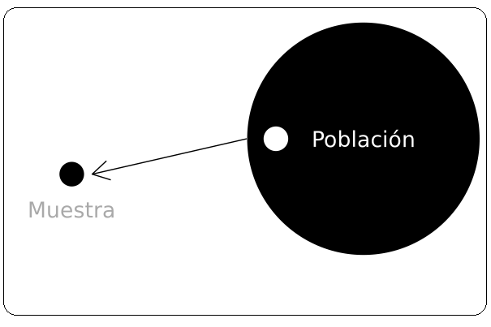

Clase 1 · Introducción y repaso de estadística
Contenido oficial de la semana
Esta página reproduce íntegras y en orden las diapositivas de la cátedra del viernes de la
semana 1 (sem1/clase1.tex). El repaso de estadística (repaso_ayudantia.tex y
repaso_estadistica.tex) se trabaja en la ayudantía y tiene su propia página:
📘 Ayudantía 1. Los bloques Interactivo, los casos y las
preguntas son material adicional para estudiar.
Cómo estudiar esta página
La clase está ordenada en 7 temas. Cada tema parte con una pregunta guía, sigue con las láminas y los simuladores, y termina con ✍️ preguntas de selección múltiple (cada alternativa incorrecta explica por qué no lo es) y, en casi todos, un 🧪 ejercicio de R que puedes editar y ejecutar aquí mismo, sin instalar nada. Los 5 ejercicios de R en un solo archivo: 📥 clase1.R.
🎯 Objetivos de la sesión
- Entender qué es la econometría y qué tipo de preguntas permite responder.
- Distinguir correlación de causalidad y el rol del supuesto ceteris paribus.
- Reconocer los tipos de datos y los métodos de muestreo.
🗓️ Agenda de la cátedra (viernes 18:40 – 21:25)
Haz clic en un tema para ir directo a él.
- 18:40🎓 Presentación del curso: programa, evaluaciones, cátedra + ayudantía y trabajo práctico
- 19:001¿Qué es la econometría?Parte 1 · láminas 1–3 · ✍️ 2 preguntas
- 19:252Correlación no es causalidadParte 1 · láminas 4–6 · ✍️ 2 preguntas · 🧪 R
- 19:55☕ Receso
- 20:053La econometría en acciónParte 1 · lámina 7 · ✍️ 2 preguntas
- 20:254Tipos de datosParte 1 · láminas 8–11 · ✍️ 2 preguntas · 🧪 R
- 20:505Población, muestra y parámetrosParte 1 · láminas 12–15 · ✍️ 2 preguntas · 🧪 R
- 21:006Métodos de muestreoParte 1 · láminas 16–19 · ✍️ 3 preguntas · 🧪 R
- 21:157Estadística descriptiva e inferencialParte 1 · lámina 20 · ✍️ 2 preguntas · 🧪 R
- 21:25✅ Ideas clave, autoevaluación y cierre
📘 Ayudantía de la semana · se trabaja otro día, en su propia página: Ir a la Ayudantía 1 →
Introducción a la econometría
📄 Diapositivas: sem1/clase1.tex · 20 láminas
¿Qué es la econometría?
¿Qué tipo de preguntas podemos responder combinando teoría económica, estadística y datos?
¿Qué es econometría?
-
Es una disciplina que emplea la teoría económica y métodos estadísticos para contrastar distintas teorías, pronosticar variables y evaluar políticas públicas utilizando bases de datos.
-
Es una aplicación del metodo científico en economía. Nos permite refutar hipótesis económicas.
-
Nos permite contestar preguntas como por ejemplo:
-
Cuál es la brecha salarial por género?
-
Cuál es el efecto de haber completado la universidad en el salario?
-
Econometría moderna
La econometría moderna se enfoca en contestar 3 tipos de preguntas:
-
Estimar como la esperanza condicional de una variable depende de otra.
-
Estimar el impacto causal de una variable sobre la otra.
-
Predecir el comportamento de una variable hacia el futuro.
Método econométrico
-
Definir objetivo: qué quiero estudiar?
-
Estructura:
-
Modelo Económico: modelos que explican el comportamiento de una variable económica en función de otras.
\(Y = f (x_1; x_2; ...; x_k)\)
Ejemplo 1: Función de producción \(Y = AK^{\alpha}L^{\beta}\)
Ejemplo 2: Retornos educación
salario = f (educ; experiencia; ingfamiliar ; habilidad) -
Modelo econométrico: permite cuantificar, contrastar y evaluar el modelo económico.
-
Especificar la funcion f (:).
-
Las variables económicas son aleatorias por lo que lo incorporamos con un termino de error:
\(y = f (x_1; x_2;...; x_k) + u\) -
Los datos.
-
-
✍️ Practica · Tema 1
¿Cuál de estas preguntas es de predicción, uno de los tres tipos de la lámina 2?
✅ Lámina 2: la econometría moderna estima esperanzas condicionales, impactos causales y predicciones.
En y = f(x₁, …, xₖ) + u, ¿por qué aparece el término u?
✅ Lámina 3: el modelo econométrico agrega un término de error al modelo económico.
Correlación no es causalidad
Si dos variables se mueven juntas, ¿una causa la otra?
Causalidad y correlación
Correlación no es causalidad
-
Muchas veces nos interesa conocer el efecto causal de una variable sobre otra.
-
El concepto ceteris paribus es clave para la causalidad: efecto de X sobre Y manteniendo todos los demas factores relevantes constantes. Muy difícil en la práctica en ciencias sociales.
-
Vamos a ver en el curso los supuestos necesarios y técnicas para hacerlo.
Correlación espuria: existe una relación matemática pero los factores no presentan una relación lógica.
Ejemplo
-
Información: En una base de individuos de 35 años de Chile, encuentro que las personas que terminaron la universidad ganan 30% más que las que no la terminaron.
-
Pregunta: De lo anterior, puedo concluir que ir a la universidad causa un aumento del ingreso de los individuos?
Respuesta
No puedo concluir eso.
-
Ir a la universidad está asociado con un montón de otras características que tambien afectan ingreso.
-
Por ejemplo, la habilidad, el ingreso de los padres, etc.
✍️ Practica · Tema 2
En los días con más venta de helados hay más ataques de tiburón. ¿Qué lo explica mejor?
✅ El calor lleva a comprar helados y a bañarse en el mar. Manteniendo la temperatura constante (ceteris paribus), la relación desaparece.
Las personas de 35 años que terminaron la universidad ganan 30% más. ¿Qué haría falta para afirmar que la universidad causa ese 30%?
✅ Es la respuesta de la lámina 6: ir a la universidad está asociado con otras características que también afectan el ingreso.
🧪 Practica en R · Helados, tiburones y temperatura
Simula 200 días en que la temperatura aumenta las ventas de helados y los ataques de tiburón, pero los helados no afectan los ataques. Compara la regresión con y sin la temperatura.
# Un día caluroso hace que se vendan más helados Y que más gente se bañe en el mar
set.seed(1)
dias <- 200
temperatura <- runif(dias, 10, 35)
helados <- 20 + 3 * temperatura + rnorm(dias, sd = 8)
ataques <- 0.1 * temperatura + rnorm(dias, sd = 0.5) # sin helados
cor(helados, ataques) # correlación alta…
coef(lm(ataques ~ helados))["helados"] # …y pendiente positiva
coef(lm(ataques ~ helados + temperatura)) # con temperatura fija: ≈ 0
plot(helados, ataques, pch = 19, col = "steelblue",
main = "¿Los helados provocan ataques de tiburón?")
🎯 Reto: cambia 0.1 * temperatura por 0 * temperatura. ¿Qué pasa con la correlación entre helados y ataques?
La econometría en acción
¿Cómo ayuda la econometría a decidir qué políticas funcionan?
Econometría como herramienta aplicada
-
Pregunta: como solucionamos problemas de worms intestinales en Africa?
Miguel y Kremer (2004), Worms: Identifying Impacts on Education and Health in the Presence of Treatment Externalities: Encuentran que repartir pildoras en colegios, mejora la salud, reduce el ausentismo educacional no solo de los tratados sino también de sus vecinos. Gracias a estos estudios la iniciativa deworming the world recauda billones de dólares para esta política. -
Pregunta: las consultoras de management pueden mejorar la productividad de las firmas?
Bloom et al. (2017) Increasing Firm Productivity through Management Consulting Services in India: Muestra que si y lo cuantifica.
✍️ Practica · Tema 3
Según Miguel y Kremer (2004), ¿qué pasó al repartir pastillas antiparasitarias en colegios?
✅ Por eso el título habla de Treatment Externalities: el tratamiento también beneficia a quienes no lo recibieron.
¿Qué tienen en común el estudio de Worms y el de consultorías en India (Bloom et al.)?
✅ Son experimentos aleatorizados: la herramienta que veremos en la Clase 3 para eliminar el sesgo de selección.
Tipos de datos
¿De dónde vienen los datos y qué forma tienen?
Tipos de Datos
-
Experimentales: el investigador asigna en forma aleatoria la exposición.
-
Pseudo-experimental: el investigador controla la exposición pero no asigna en forma aleatoria.
-
Observacional (o no-experimental): el investigador no controla la exposición, depende de variables que el no controla.
Rara vez usa datos experimentales extremadamente caros, problemas éticos.
Corte transversal: Muestra de individuos, hogares, empresas, regiones, países, etc., recolectados en un tiempo dado. A veces el estudio no se realiza exactamente en el mismo periodo de tiempo para todos las unidades evaluadas, pero diferencias temporales menores se ignoran. Se asume que los datos fueron obtenidos por muestreo aleatorio (random sampling) desde la población subyacente.
Series de tiempo: Observaciones de una o más variables en el tiempo. Ej. Precios de acciones, dólar, IPC, ventas de automóviles, etc. Eventos pasados influencian eventos futuros. Rezagos en el comportamiento son prevalentes en ciencias sociales. Tiempo es una dimensión importante en datos de series de tiempo. Frecuencia \(\Delta\) tiempo=1, día, año, semestre, trimestre, etc. A diferencia de datos de corte transversal, datos de series de tiempo no pueden asumirse independientes.
Datos longitudinales o de panel: Consiste en una serie de tiempo para cada miembro del set de datos. Ejemplo: 10 años de datos de salario, educación y empleo sobre un set de individuos. Diferencias con los anteriores es que los mismos individuos, firmas o países, son seguidos por varios años.
Varias ventajas: Control de ciertas características no observadas de individuos, firmas, etc. Facilita estudios de causa-efecto (inferencia causal). Permite estudiar los efectos del rezago en el comportamiento o resultado.
✍️ Practica · Tema 4
Tienes el PIB trimestral de Chile, Perú y Colombia entre 2000 y 2024. ¿Qué tipo de datos son?
✅ Es un panel: las mismas unidades (3 países) observadas en muchos períodos.
Una empresa sortea qué sucursales reciben un nuevo sistema de incentivos y compara las ventas. ¿Qué tipo de datos genera?
✅ La exposición la asigna el investigador en forma aleatoria: es un experimento (lámina 8).
🧪 Practica en R · Tres formas de datos
Arma un ejemplo pequeño de cada tipo de datos de las láminas 9 a 11 y fíjate en qué cambia: las unidades, los períodos o ambos.
set.seed(4)
# Corte transversal: muchas unidades en un mismo momento
corte <- data.frame(persona = c("Ana", "Beto", "Carla"),
salario = c(850, 620, 1100), anio = 2024)
# Serie de tiempo: una unidad a lo largo del tiempo
serie <- data.frame(anio = 2020:2024,
dolar = c(792, 759, 873, 840, 944)) # promedio anual aprox.
# Panel: las MISMAS unidades en varios momentos
panel <- expand.grid(persona = c("Ana", "Beto", "Carla"), anio = 2022:2024)
panel$salario <- round(700 + 60 * (panel$anio - 2022) + rnorm(9, sd = 40))
corte
serie
panel
table(panel$persona) # cada persona aparece una vez por año
🎯 Reto: agrega el año 2025 al panel (cambia 2022:2024 por 2022:2025 y 9 por 12). ¿Cuántas filas tiene ahora?
Población, muestra y parámetros
¿Cómo podemos conocer a toda una población mirando solo una parte?
Muestreo
Los datos experimentales son obtenidos sobre conjuntos de individuos u objetos, sobre los cuales se quiere conocer algunas características.
Llamaremos unidad de observación a estos individuos y la totalidad de estas unidades de observación se denomina población.
El Muestreo es la disciplina que trata con el conjunto de métodos, técnicas y procedimientos para tomar u obtener una muestra particular de la población a efecto de realizar inferencias a partir de la misma.
Se dice que una muestra es representativa de una población si toda unidad de observación podrá aparecer en la muestra, y esto con una probabilidad conocida.

¿Por qué muestrear la población?
-
Imposibilidad física de chequear todos los ítems en la población.
-
El costo de estudiar todos los elementos en la población.
-
Los resultados del muestreo son normalmente adecuados.
Objetivos del muestreo
Estimar los parámetros de la población.
-
Variable: lo que se desea medir en la muestra. Ej. Nivel de educación, nivel de ingresos, etc.
-
Parámetros: valor numérico que describe una característica de una población completa. Promedio, desviación estándar, betas, etc.
-
Estadístico: calculado sobre la muestra.
-
Los parámetros normalmente son desconocidos, se estiman a través del estadístico.
✍️ Practica · Tema 5
El ingreso promedio de todos los hogares de Chile es un…
✅ Lámina 15: los parámetros describen a la población y normalmente se estiman con estadísticos muestrales.
Una fábrica de ampolletas quiere saber cuántas horas duran. ¿Por qué no las prueba todas?
✅ Lámina 14: imposibilidad física, costo y resultados que normalmente son adecuados.
🧪 Practica en R · Muestra grande pero sesgada
Una población de 100 000 votantes. Compara una muestra enorme tomada solo entre quienes tienen teléfono con una pequeña muestra aleatoria.
set.seed(1936)
N <- 100000
# Población: quienes tienen teléfono (más ricos) prefieren más al candidato A
telefono <- rbinom(N, 1, 0.35)
vota_A <- rbinom(N, 1, ifelse(telefono == 1, 0.60, 0.30))
mean(vota_A) # parámetro (en la práctica, desconocido)
grande_sesgada <- sample(which(telefono == 1), 20000) # solo con teléfono
pequena_azar <- sample(N, 1000) # aleatoria simple
c(sesgada_n20000 = mean(vota_A[grande_sesgada]),
azar_n1000 = mean(vota_A[pequena_azar]))
🎯 Reto: aumenta la muestra sesgada de 20000 a 30000. ¿Se acerca al parámetro?
Métodos de muestreo
¿Cuál es la mejor manera de elegir la muestra?
Muestreo aleatorio
-
Muestreo aleatorio simple: muestra seleccionada de manera que cada elemento o individuo de la población tenga las mismas posibilidades de que se le incluya.
-
Muestreo aleatorio sistemático: Los elementos o individuos de la población se ordenan de alguna manera. Se selecciona un punto aleatorio de inicio y posteriormente se elige cada k-esimo miembro de la población. A nivel técnico, el muestreo sistemático no crea una muestra verdaderamente aleatoria. Sólo la selección del primer elemento de muestreo sistemático es una selección de probabilidad. Una vez que el primer elemento es seleccionado, algunos de los elementos tendrán una probabilidad cero de selección.
-
Muestreo aleatorio estratificado: La población se divide en subgrupos denominados estratos y se selecciona al azar una muestra de cada estrato.
-
Muestreo por conglomerados (cluster): La población se divide en conglomerados a partir de límites geográficos o de otra clase. Luego se seleccionan los conglomerados al azar y se toma una muestra aleatoria con elementos de cada grupo.
Muestreo Estratificado vs. Muestreo por Conglomerados
Muestreo Estratificado
Cada estrato es homogéneo. Se selecciona muestra dentro de cada uno.
Muestreo por Conglomerados
Cada conglomerado es heterogéneo. Se seleccionan grupos completos.
Comparación Clave
-
Estratos: Internamente homogéneos. Se muestrea dentro de cada grupo.
-
Conglomerados: Internamente heterogéneos. Se seleccionan grupos enteros.
Muestreo no probabilístico
- En muestreo no probabilístico inclusión en la muestra es basada en el juicio de la persona que selecciona los individuos o elementos.
✍️ Practica · Tema 6
Sorteas uno de los primeros 10 clientes de una lista y luego eliges a cada décimo cliente. ¿Qué método es?
✅ Lámina 16: se ordena la población, se elige un inicio al azar y luego cada k-ésimo elemento.
Quieres estimar el ingreso promedio en Santiago. Las comunas son muy distintas entre sí, pero bastante homogéneas por dentro. ¿Qué método es más preciso para un mismo n?
✅ Grupos homogéneos por dentro y distintos entre sí funcionan como estratos: muestrear en todos reduce la varianza (lámina 18).
El Literary Digest encuestó a más de 2 millones de personas y se equivocó. ¿Por qué?
✅ Lámina 13: una muestra es representativa si toda unidad puede aparecer con una probabilidad conocida.
🧪 Practica en R · Estratificado contra aleatorio simple
Simula tres comunas con ingresos muy distintos y compara 2 000 muestras de cada método: ¿cuál se equivoca menos?
set.seed(18)
# Ingresos en 3 comunas muy distintas entre sí, pero parecidas por dentro
comuna <- rep(c("A", "B", "C"), each = 2000)
ingreso <- c(rnorm(2000, 500, 50), rnorm(2000, 900, 60),
rnorm(2000, 1600, 80))
mean(ingreso) # parámetro
simple <- replicate(2000, mean(sample(ingreso, 60)))
estratificado <- replicate(2000, mean(c(
sample(ingreso[comuna == "A"], 20),
sample(ingreso[comuna == "B"], 20),
sample(ingreso[comuna == "C"], 20))))
c(simple = sd(simple), estratificado = sd(estratificado)) # error típico
boxplot(list(Simple = simple, Estratificado = estratificado),
ylab = "Promedio estimado (n = 60)")
abline(h = mean(ingreso), lty = 2)
🎯 Reto: haz que las comunas se parezcan (cambia 500 y 1600 por 900). ¿Sigue ganando el estratificado?
Estadística descriptiva e inferencial
¿Cuándo una conclusión vale solo para los datos y cuándo para toda la población?
Estadística descriptiva e inferencial
-
Estadística Descriptiva o Deductiva.
Si al analizar una muestra sólo se obtenemos conclusiones válidas para la muestra sin que se puedan o se requieran generalizar sus resultados para toda la población.
-
Estadística Inductiva o Inferencial.
A partir de una muestra, podemos inferir conclusiones estadísticamente válidas para todo la población.
✍️ Practica · Tema 7
Un profesor calcula el promedio de notas de su curso para informárselo al curso. ¿Qué estadística usa?
✅ Lámina 20: la estadística descriptiva saca conclusiones válidas solo para la muestra analizada.
Con una encuesta a 1 000 personas estimas la tasa de desempleo del país y su intervalo de confianza. ¿Qué estadística usas?
✅ Generalizar a la población con un margen de error es inferencia: es lo que repasa la ayudantía.
🧪 Practica en R · Describir e inferir
Con 36 meses de ventas, primero describe la muestra y luego infiere la media poblacional, como en el ejemplo de la ayudantía.
set.seed(7)
ventas <- round(rnorm(36, mean = 200, sd = 60)) # 36 meses de ventas
# Descriptiva: resume ESTA muestra
summary(ventas)
sd(ventas)
# Inferencial: dice algo de la POBLACIÓN (la media μ, que no conocemos)
mean(ventas) + c(-1, 1) * 1.96 * 60 / sqrt(36) # IC 95%, σ = 60 conocido
🎯 Reto: cambia los dos 36 por 144. ¿Qué pasa con el ancho del intervalo?
🧠 Ideas clave
- La econometría combina teoría económica y estadística para describir relaciones, estimar efectos causales y predecir.
- Correlación no es causalidad: un efecto causal compara situaciones ceteris paribus (helados, tiburones y temperatura).
- Los datos pueden ser experimentales u observacionales, y de corte transversal, series de tiempo o panel.
- Lo que hace representativa a una muestra es cómo se elige (aleatoriamente), no su tamaño: la sopa revuelta y el Literary Digest.
✅ Autoevaluación
Los barrios con más bomberos registran más incendios. ¿Qué concluyes?
✅ Correlación no es causalidad: hay que comparar barrios ceteris paribus.
Una encuesta por Instagram sobre uso de redes sociales recibe 50 000 respuestas. ¿Es representativa de los chilenos?
✅ Una muestra es representativa si toda unidad puede aparecer con probabilidad conocida (lámina 13).
Tienes las notas de los mismos 200 estudiantes en cada semestre durante 4 años. ¿Qué tipo de datos son?
✅ Las mismas unidades observadas en varios períodos: un panel (lámina 11).
📚 Para la próxima clase
- Wooldridge, capítulo 1 (La naturaleza de la econometría y los datos económicos).
- 📘 En la Ayudantía 1 se repasa la estadística que usaremos todo el curso (Wooldridge, apéndice C).
- Próxima clase: Regresión lineal simple.